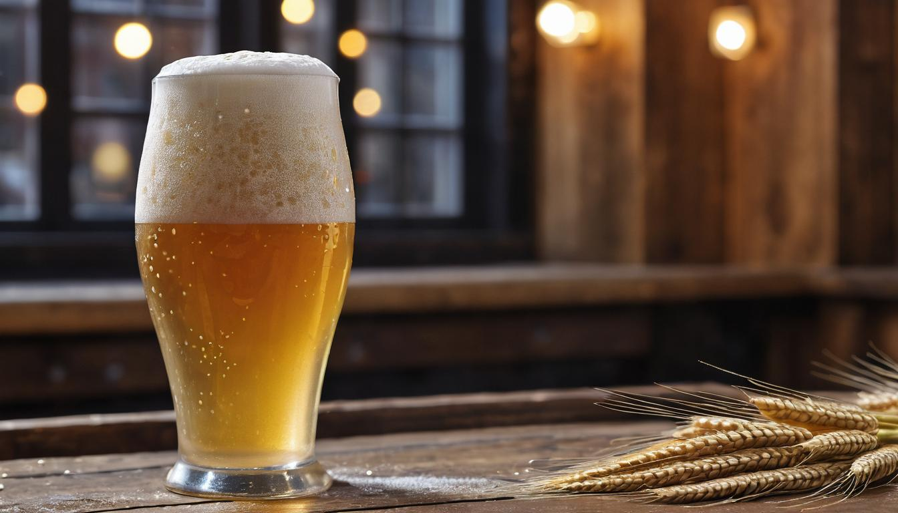
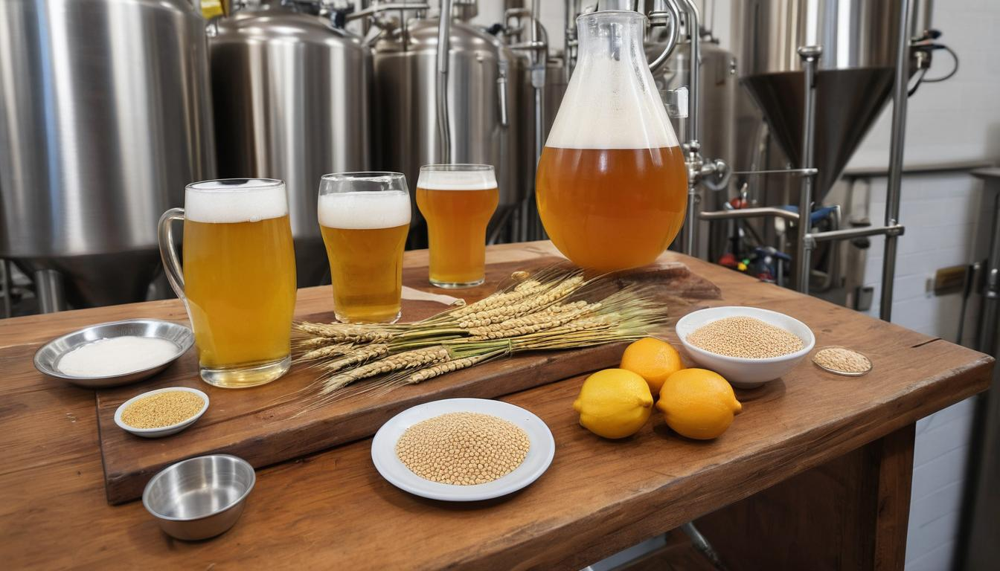
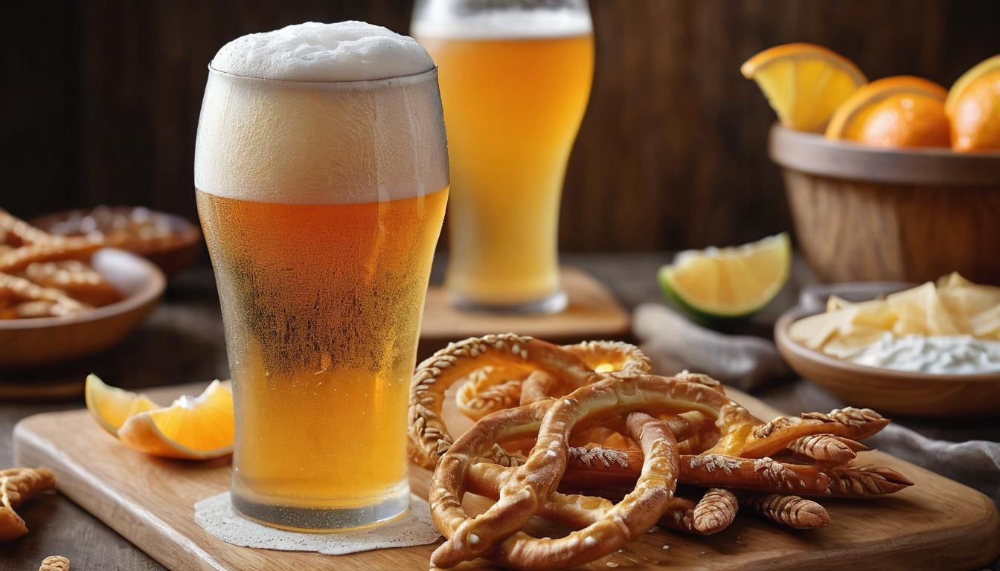

Wheat Beer For Summer Drinking
Wheat beer stands out among other brews with its light, refreshing taste that can be both fruity and spicy. From local brewpubs to homebrew kitchens, there's a growing fascination with its versatility and distinct cloudy appearance—a true testament to the high wheat content used in these beers. For many enthusiasts like you, mastering the art of brewing this delightful beverage can turn a curious hobby into a celebrated craft.
To meet this rising interest, we’ve put together a detailed guide after thorough research and hands-on experiments. This journey will not only enhance your brewing techniques but also help you navigate potential pitfalls commonly encountered by homebrewers. You might be surprised to learn about the different styles within the wheat beer family—each offering unique flavors and experiences worth exploring. Let’s start by examining what makes wheat beer so distinctive.
Wheat beer comes in various styles such as German Weizenbier, Belgian witbier, Lambic, Berliner Weisse, and Gose. Each style offers unique flavors and characteristics, providing a diverse range of options for beer enthusiasts.

Characteristics of Wheat Beer
Wheat beer possesses a personality all its own. Its distinct features make it stand out in the world of brewing, and these qualities contribute to its wide appeal. One of the first things you'll notice about wheat beer is its hazy, cloudy appearance. Unlike other beers that are clear, wheat beer's cloudiness is due to the high proportion of wheat used in the brewing process.
This cloudy appearance comes from the suspended yeast and proteins in the brew. When you pour a glass of wheat beer, you might see those tiny particles floating around, giving it an almost ethereal look. This visual aspect immediately sets it apart from other beers, making it instantly recognizable to enthusiasts.
Aroma and Flavors
But wheat beer isn't just about looks—its aroma and flavor are equally distinctive. The aroma often carries notes of banana, clove, and sometimes citrus, giving it a lively and refreshing scent that sets it apart from other beer styles. These fruity and spicy aromas add to the overall appeal of wheat beer and can vary based on the specific strains of yeast used during fermentation.
As for its flavor profile, wheat beer delivers a delightful combination of bread-like maltiness, hints of spice, and fruity esters from the yeast. These flavors come together to create a well-balanced taste that's light and refreshing—perfect for warm weather or lounging around with friends.
Bitterness Level
One of the most noticeable differences between wheat beer and other types of beer is its lower bitterness level. When compared to hop-forward styles like IPAs or pale ales, wheat beer tends to be milder in bitterness, making it more approachable for those who are sensitive to bitter tastes or who prefer a smoother drinking experience.
This lower bitterness allows the other flavors in wheat beer to shine through without being overshadowed by intense hops, giving drinkers a chance to savor the unique characteristics derived from the ingredients and specialized yeast strains.
Having explored what sets wheat beer apart in terms of appearance, aroma, flavor, and bitterness level, it's clear to see why this style has captivated the hearts of beer enthusiasts around the world.
Classic Examples of Wheat Beer
When it comes to wheat beer, there's a world of delicious options waiting to be explored. Each style brings its own unique flavors and aromas that can truly elevate your drinking experience. Let's take a closer look at a few classic examples:
German Hefeweizen
Let's start with the classic German Hefeweizen. This traditional Bavarian wheat beer is celebrated for its unfiltered and cloudy appearance, giving it a distinctively hazy look. But it's not just about looks - the taste is equally mesmerizing. The specialized strains of yeast used during fermentation contribute to its prominent overtones of banana and clove, making each sip a delightful experience. Notable brands like Weihenstephaner and Paulaner have been perfecting this style for generations, earning them well-deserved recognition from beer enthusiasts around the world.
The unfiltered nature of Hefeweizen plays a crucial role in its sensory appeal. It adds depth and body to the beer, enhancing its overall mouthfeel. As you pour a glass, you'll notice the cloudy appearance that sets it apart from other styles of beer. The suspended yeast particles add a creamy texture and contribute to the beer's distinct flavor profile, making every sip a rich and rewarding experience.
Belgian Witbier
Next up is the renowned Belgian Witbier. This style is known for its zesty and crisp flavor profile, often enhanced by the inclusion of spices and citrus peels during brewing. The use of coriander and orange peel imparts refreshing notes that perfectly complement the natural characteristics of wheat beer. Brands like Hoegaarden and Allagash White are synonymous with exceptional Witbier, each offering a delightful blend of flavors that captivate the palate.
The addition of spices and citrus elements elevates the complexity of Belgian Witbier, adding layers of nuanced flavors to the brew. The subtle interplay between coriander and orange peel creates a harmonious balance, resulting in a vibrant drinking experience that has secured the enduring popularity of this style.
American Wheat Beer
Finally, we have the American Wheat Beer, which typically showcases the refreshing quality of wheat without overpowering spice additions. Crafted with a lighter touch on spices, this style emphasizes the clean and crisp attributes of wheat while maintaining a well-rounded flavor profile. Brands like Bell's Oberon and Samuel Adams Summer Ale exemplify the characteristically refreshing nature of American Wheat Beer, offering a tasteful interpretation that appeals to a wide range of beer aficionados.
The emphasis on showcasing the inherent qualities of wheat sets American Wheat Beer apart within the spectrum of wheat beer styles. By harnessing the natural essence of wheat, brewers create a refreshing and approachable beer that effortlessly complements various drinking occasions.
Exploring these classic examples introduces us to the diverse array of flavors and aesthetics present within wheat beer styles. As we continue our journey, we'll further unveil the intricacies behind brewing and savoring these delightful creations.
Brewing Your Own Wheat Beer
Brewing your own wheat beer can be an incredibly gratifying experience. It allows you to experiment with different ingredients, flavors, and styles while creating a brew that perfectly suits your taste preferences. Before you start, it's crucial to understand the basic steps and considerations to ensure a successful outcome.
When you're just starting out, it's best to begin with a basic wheat beer recipe. This allows you to familiarize yourself with the brewing process and gradually adjust the recipe based on your preferences. As you gain more experience, you can explore variations like fruit-infused wheat beers or specialty yeast strains that impart unique flavors.
Sanitation is a fundamental aspect of homebrewing that cannot be overlooked. Ensuring cleanliness and sanitation throughout the entire brewing process is essential in preventing contamination and spoilage. This includes sterilizing your brewing equipment, fermenters, and any other items that come into contact with your beer to maintain a healthy fermentation environment.
For new homebrewers, seeking guidance and tips from experienced brewers can be invaluable. Online communities such as the Homebrewing subreddit provide a platform for sharing recipes, techniques, troubleshooting advice, and a supportive environment for those venturing into the world of homebrewing. Here, you can access a wealth of information tailored to both novice and seasoned brewers.
Embracing the art of homebrewing is not just about creating a refreshing beverage; it's a journey of experimentation, learning, and camaraderie within the vibrant community of brewing enthusiasts. With dedication and curiosity, the process of brewing your own wheat beer at home can become an immensely fulfilling endeavor.
In this rich tapestry of homebrewing experiences, we now move forward to uncover the foundational elements and intricate steps behind crafting the perfect wheat beer in "Ingredients and Brewing Process".
Ingredients and Brewing Process

Brewing wheat beer isn't just about knowing the steps; it's also about understanding the unique components that create its signature flavor profile. By carefully selecting and skillfully blending key ingredients, you can brew a delightful wheat beer that captivates the senses with its hazy appearance, fruity aroma, and refreshing taste.
Key Ingredients
Wheat Malt: forms the backbone of wheat beer, contributing to its characteristic cloudiness and light mouthfeel. This malt lends a smooth, creamy texture that is distinct from beers brewed primarily with barley.
Barley Malt: is an essential component for adding fermentable sugars to the wort. It contributes to the overall sweetness and body of the brew.
Specialized Yeast: is pivotal in creating the nuanced flavors found in wheat beer. Specially selected yeast strains work their magic by yielding those delightful fruity and spicy notes that are synonymous with this style.
Hops: while used sparingly, play a crucial role in balancing the sweetness of the malt with a subtle bitterness. This delicate touch adds depth to the overall flavor profile without overshadowing the prominent wheat and yeast characteristics.
All these ingredients come together harmoniously, each playing a vital role in shaping the final product. The art lies in balancing these components to achieve a well-rounded brew that embodies the essence of traditional wheat beer.
Brewing Steps
Mashing: This step involves combining crushed wheat and barley malts with water at specific temperatures. The objective here is to activate enzymes within the malts that convert starches into fermentable sugars, enriching the wort with a sweet, complex flavor foundation.
Boiling: Once mashing is complete, hops are added to the wort before it is boiled. Boiling serves multiple purposes—it sterilizes the wort, extracts flavors and aromas from the hops, and initiates chemical reactions that influence color and flavor development.
Fermentation: After boiling, the wort must be cooled before yeast is introduced. The specialized yeast takes charge, metabolizing sugars into alcohol and carbon dioxide over time, culminating in a flavorful beer with its distinctive esters and phenols.
Bottling: When fermentation is deemed complete, bottling your beer becomes the final step. A small amount of priming sugar is added to each bottle to induce natural carbonation during conditioning. This delicate process ensures that your beer has just the right amount of fizz when you're ready to savor it.
These fundamental brewing steps—mashing, boiling, fermentation, and bottling—form an intricate dance where precision and creativity intertwine to yield a delectable wheat beer brimming with character and complexity.
The careful selection of ingredients coupled with an informed approach to brewing techniques underscores the artistry behind crafting a quality wheat beer that delights both brewers and enthusiasts alike.
Tasting and Serving Tips

Tasting and serving wheat beer is a delightful ritual that comprises several useful tips to enhance the overall experience. The serving temperature is crucial, as wheat beer is best enjoyed when it's fresh and cold, ideally at around 45-50°F. This ensures that you can savor all the delicious flavors present in the beer.
The choice of glassware plays a significant role in elevating the taste and aroma of wheat beer. Using the correct glass for each specific style of wheat beer can enhance the overall drinking experience. For instance, Hefeweizen or Weizenbier is traditionally served in tall, vase-shaped glasses known as weizen glasses. These glasses are specifically designed to accommodate the beer's frothy head while allowing room for the consumer to enjoy its aromas. Belgian witbier, on the other hand, is often poured into tulip glasses to fully capture its complex aromas and allow for a proper head formation.
There’s a unique tradition associated with consuming wheat beers like Hefeweizen called "Hefeweizen rouse." Just before finishing your pour, give the bottle a gentle swirl to redistribute the yeast sediment that has settled at the bottom of the bottle. When this sediment is evenly mixed into the pour, it contributes to the beer's characteristic cloudy appearance and imparts additional flavor complexity.
When it comes to pairing food with wheat beer, opt for light salads, seafood dishes, or mild cheeses to complement its refreshing character. The fruity and spicy notes present in wheat beer beautifully complement these types of dishes, creating a harmonious gastronomic experience.
By paying attention to these tips - from ensuring optimal serving temperature and using the right glassware to incorporating unique pouring traditions - you can truly elevate your enjoyment of wheat beer to new heights.
Now that we've discussed how to savor and serve wheat beer to maximize enjoyment, let's explore the wonderful world of food pairings with this versatile and flavorful beverage.
Food Pairing with Wheat Beer
Ah, the delightful art of food pairing. It's like matchmaking for your taste buds, and when it comes to wheat beer, the possibilities are practically endless. With its refreshing taste, mild sweetness, and sometimes even hints of spice or fruit, wheat beer can complement a wide array of dishes. Let's explore some exciting pairings that will elevate your dining experience to new heights.
First up, let’s talk about light and zesty dishes. Wheat beer’s effervescent nature and subtle fruit and citrus notes make it a fantastic match for these types of meals. Picture yourself enjoying a bold Caesar salad adorned with a tangy citrus dressing—now imagine how those bright, zesty flavors will dance beautifully with the crisp, refreshing notes of wheat beer. Similarly, seafood delights such as shrimp or fish tacos find a perfect companion in wheat beer, enhancing the flavors and textures with each sip and bite.
Next on the menu are spicy foods. Whether it's well-spiced Mexican cuisine or the vibrant flavors of Thai dishes, wheat beer is an ideal partner in crime. The cool effervescence of a wheat beer can help tame some of the heat from spicy foods, making for a harmonious balance that allows you to savor each delicious note without overwhelming your palate.
But hey, we can't forget about fruity desserts. When it comes to capping off a delightful meal with something sweet, wheat beer certainly holds its own. Whether it's delectable lemon tarts or comforting berry cobblers, the nuanced fruitiness of many wheat beers complements these desserts perfectly, creating a symphony of flavor that will leave you smiling from ear to ear.
By thoughtfully considering the flavor profile of wheat beer and its potential pairings, you can take your culinary journey to the next level. From light and zesty all the way to fruity sweetness, wheat beer holds its place as a versatile and delightful companion at the dining table. Cheers to great company and exceptional flavors!
No matter which wheat beer and food pairing you choose, embracing the versatility of this brew can truly enhance your gastronomic adventures.